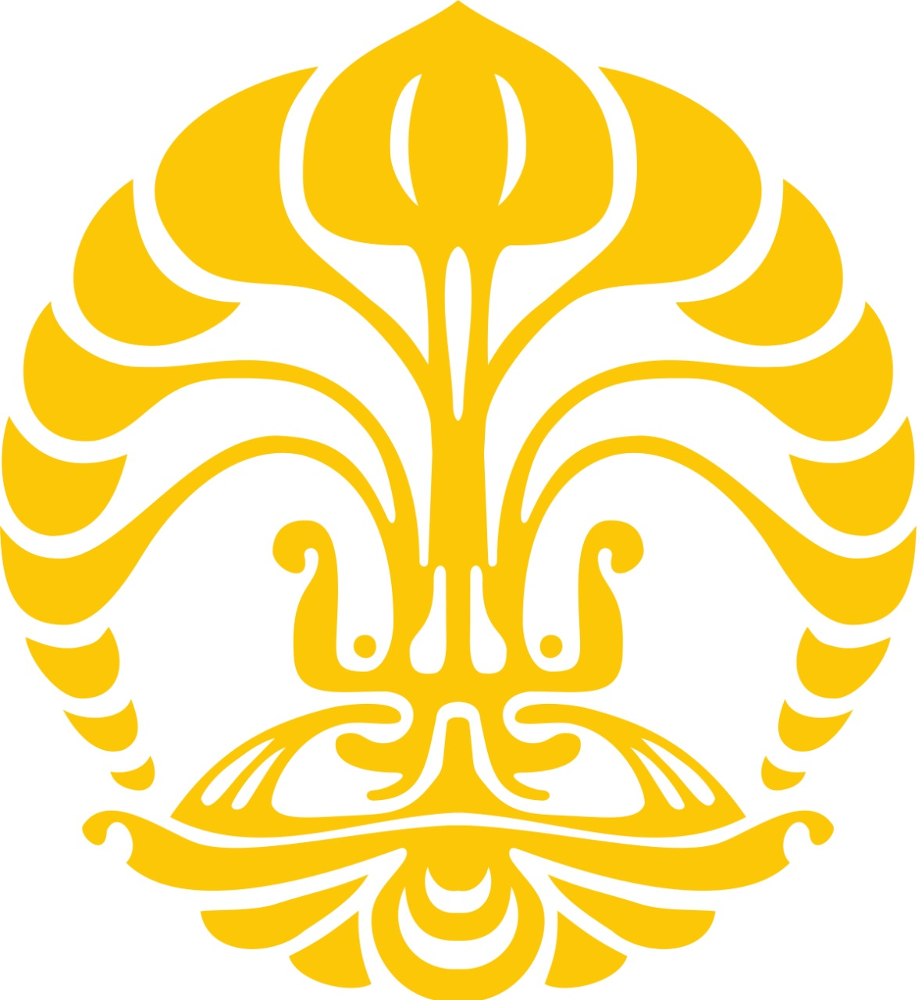

<html></html>
<head>
    <title>Visi-Misi</title>
  
  </head>
  <body>
    <center></center>
   <font size="6">  <center>
      <br>
      About UI
    </p><br></center>
    <br>
    <center><h4>
        Visi
    </h4><h5>
        Menjadi pusat ilmu pengetahuan, teknologi, dan kebudayaan yang unggul dan berdaya saing, melalui upaya mencerdasakan kehidupan bangsa untuk meningkatkan kesejahteraan masyarakat, sehingga berkontribusi bagi pembangunan masyarakat Indonesia dan dunia
    </center></h5>
    <br /><h4>
      <font color="black">
        <br>
        <center><h4>
            Misi
        </h4></center>
        <ul>
            <li>Menyediakan akses yang luas dan adil, serta pendidikan dan pengajaran yang berkualitas.</li>
            <li>Menyelenggarakan kegiatan Tridharma yang bermutu dan relevan dengan tantangan nasional serta global.</li>
            <li>Menciptakan lulusan yang berintelektualitas tinggi, berbudi luhur dan mampu bersaing secara global.</li>
            <li>Menciptakan iklim akademik yang mampu mendukung perwujudan visi UI</li>
        </ul>
      <br /></h4></font>
    <a href="about us.html"><h3>> Back to index</h3></a>
  </body>
</html>